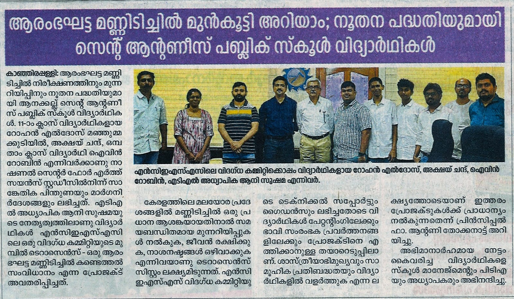

In regions prone to severe environmental shifts, traditional forecasting models fail to provide adequate early warnings for landslides. The challenge was clear: we needed a system that doesn't just react to data, but actively anticipates terrain instability.
Terrasense was conceptualized to solve this systemic vulnerability. By fusing edge-computing hardware with predictive algorithms, the goal was to buy crucial time for disaster management units.

Building Terrasense required bridging physical hardware with digital tracking. The design process focused on three core modules:
The UX process needed to remain brutalist and functional—stripping away visual noise so government operators immediately recognize critical threat levels.
What started as a conceptual framework rapidly gained traction, leading to an official collaboration opportunity with central government authorities.
The final execution proves that robust logic, when paired with high-tier design and interdisciplinary research, can transition from an ambitious idea into a life-saving infrastructural asset.